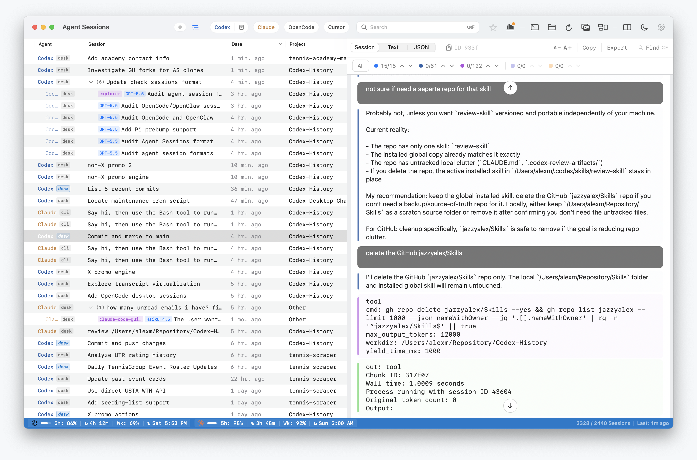
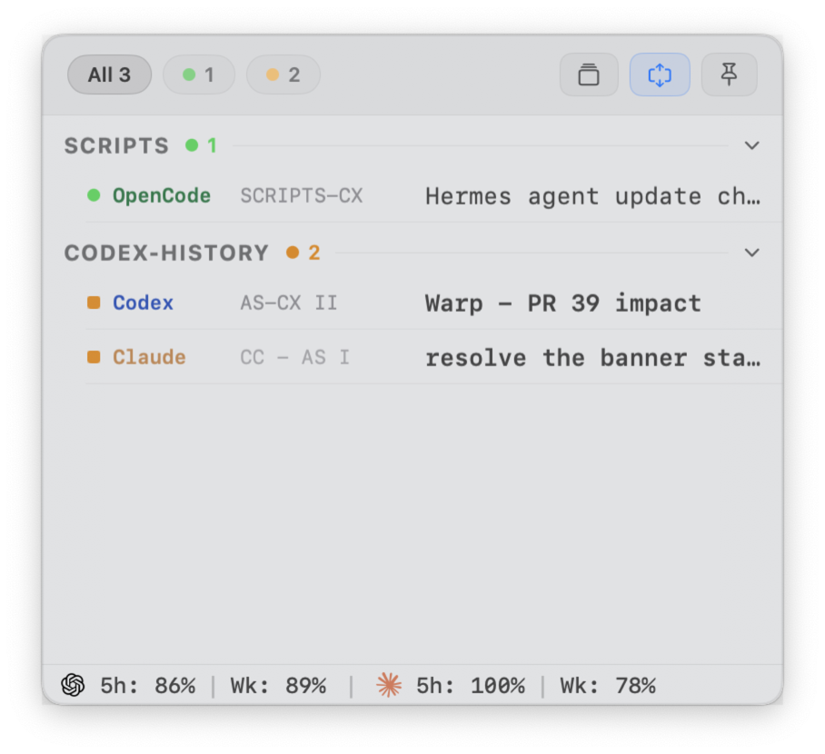
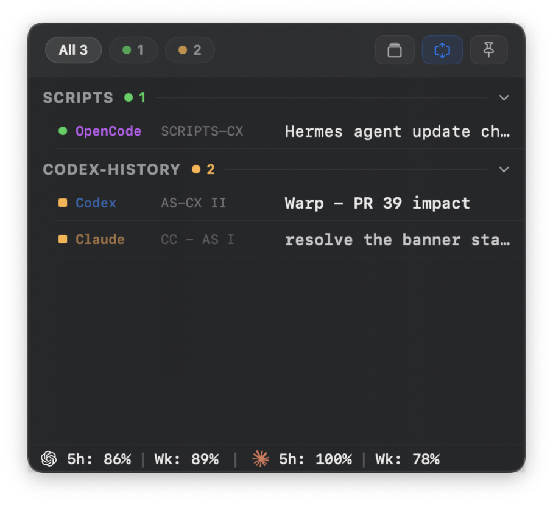
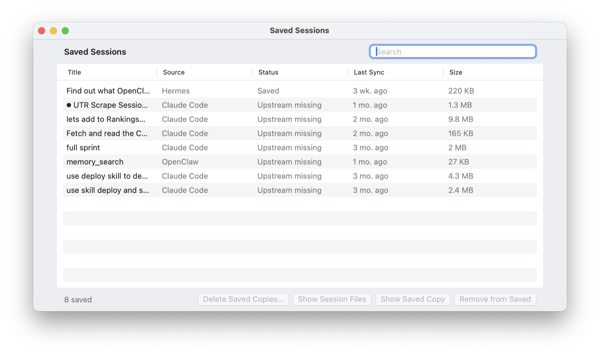
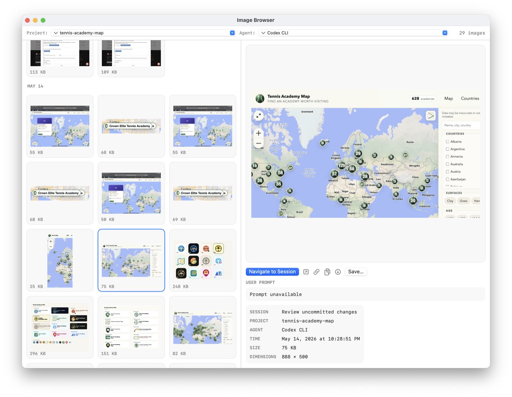
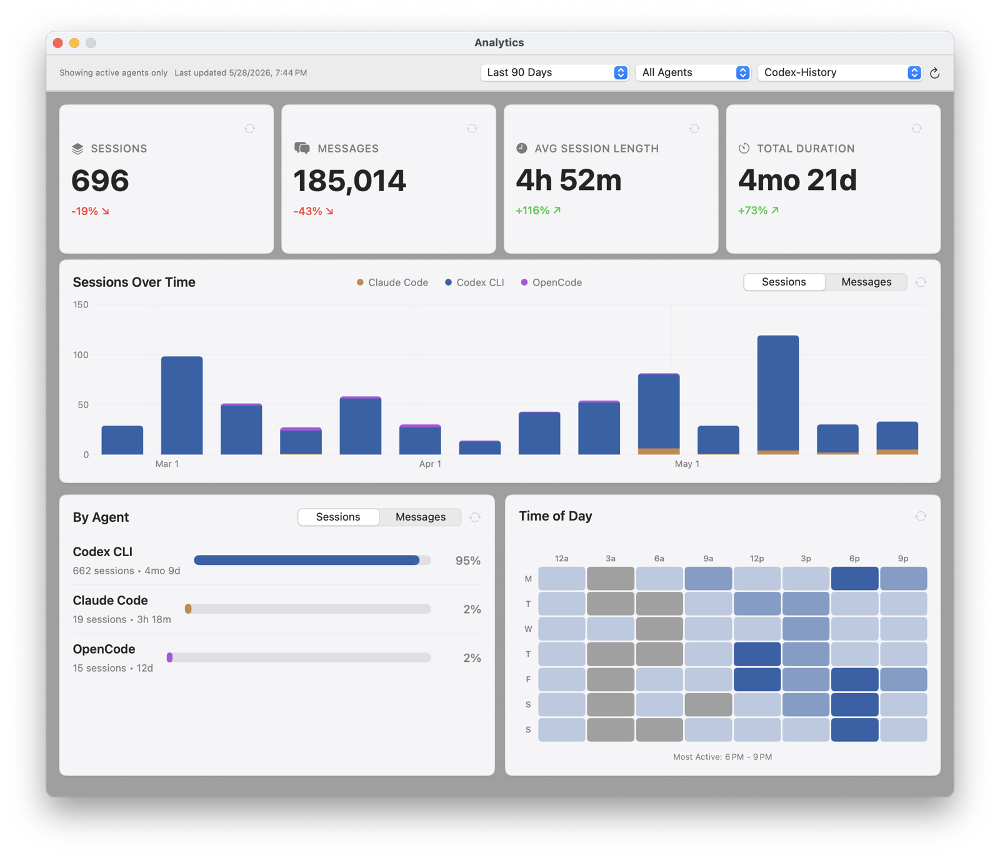

macOS • Open Source
Agent Sessions is a local-first Mac app for session history across CLI tools, desktop apps, and app-bundled agent commands. Search local Codex, Claude, OpenCode, Cursor, Copilot, Pi, Gemini, Hermes, and OpenClaw histories, inspect transcripts and images, then resume supported CLI sessions in Terminal.app, iTerm2, or Warp. Agent Cockpit adds a live command center for active iTerm2 Codex CLI, Claude CLI, and OpenCode sessions.
brew tap jazzyalex/agent-sessions
brew install --cask agent-sessionsSessions search with transcript preview

Browse local sessions from CLI tools, desktop apps, and app-bundled coding agents in one unified window.
Codex Desktop, Claude Desktop, and Cursor Agent sessions are surfaced beside terminal histories with source-specific labels, archive handling where available, and clearer project context.
Apple Notes-style search across all agents and within a single session.
Inline image support and Image Browser for reviewing visual output from Codex CLI/Desktop, Claude CLI/Desktop, and OpenCode CLI sessions.
Agent Cockpit is the live command center for active iTerm2 Codex CLI, Claude CLI, and OpenCode CLI sessions, with grouped active and waiting visibility, quick focus jumps, and compact/full cockpit modes.


Right-click a supported CLI session to copy the exact resume command or open it directly in Terminal.app, iTerm2, or Warp.
Saved Sessions window for managing archived sessions. Delete, reveal, and diagnose with archive status tooltips.
Track Codex CLI and Claude CLI usage in-app and in the menu bar. Power-aware probing and refresh cadence reduce idle load and energy spikes.
Interactive flip cards with sparklines and insights. Session trends, agent breakdowns, and time-of-day heatmaps.
How Agent Sessions searches Codex CLI, Codex Desktop, and Codex VS Code rollout history from ~/.codex/sessions.
Where OpenCode stores local session data, what Agent Sessions reads, and how to browse/search old OpenCode runs locally.
What Claude Code writes to local JSONL transcripts, what transcript context can be recovered, and where the boundary is.
How Agent Sessions reads Cursor Agent transcripts from Cursor's local storage without claiming full Cursor IDE chat history.
How Hermes Agent sessions in ~/.hermes/state.db become searchable local project history.
How OpenClaw JSONL sessions are discovered, searched, and kept separate from trajectory traces.
Saved Sessions with restore actions

Image Browser for visual session outputs

Menu bar status strip
Analytics dashboard filtered to one project
